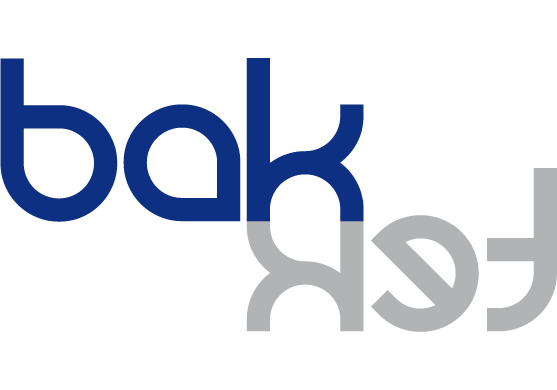

Consultant et formateur pour le développement SharePoint .NET
Ancien employé de Microsoft, je propose aujourd'hui mes services d'expertise, de formation et de développement, autour de la plateforme SharePoint (2003 à 2016).
Mon expérience est basée sur plus de 15 ans de développement SharePoint en tant que consultant grands-comptes pour Microsoft, puis en tant qu'indépendant. Les certifications Microsoft MCPD et MCT témoignent d'un haut niveau tant technique que pédagogique.
 Ingénieur Supélec (promo 2003)
Ingénieur Supélec (promo 2003)